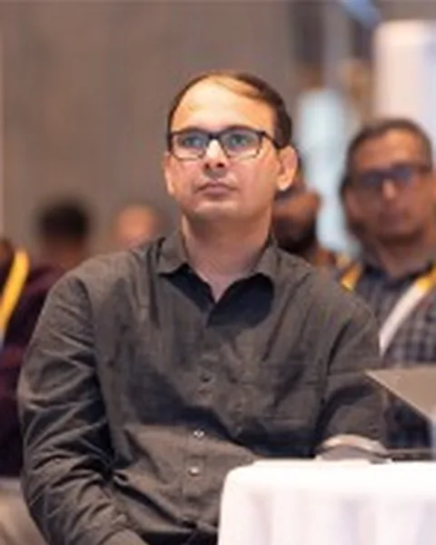
Sandeep Kumar
Applied Materials
CM4 2026
25 researchers have confirmed their participation. Official or institutional profile links are provided where verified.
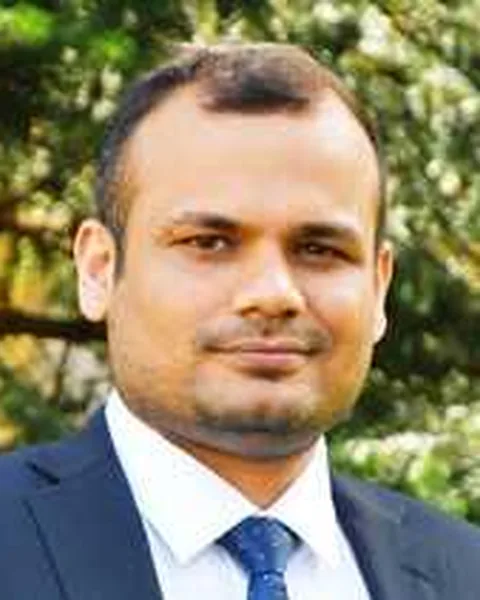
Indian Institute of Science, Bengaluru
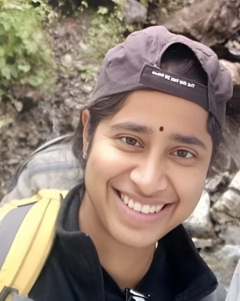
Azim Premji University
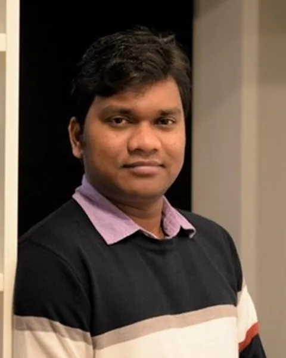
IIT Hyderabad
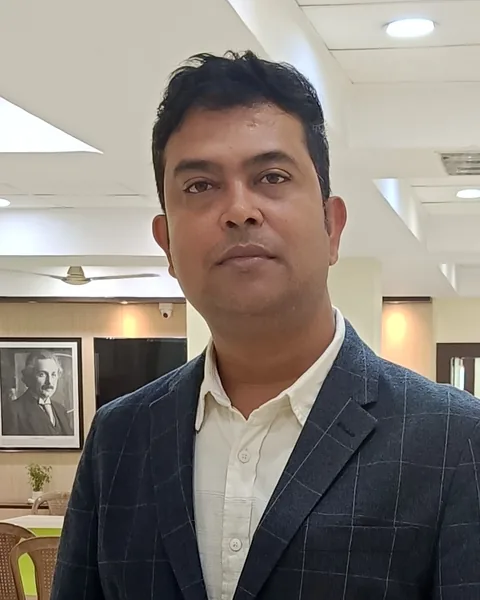
NIT Durgapur
Sorbonne Université, France
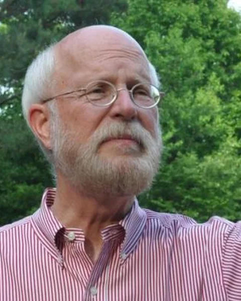
University of Georgia, USA
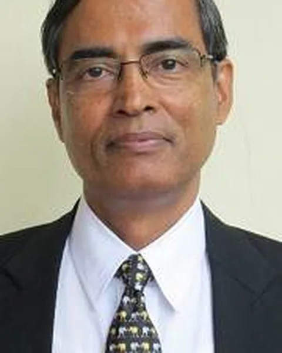
Indian Institute of Science, Bengaluru
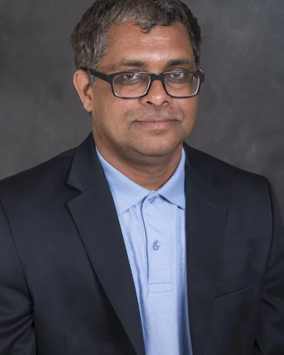
McNeese State University, USA
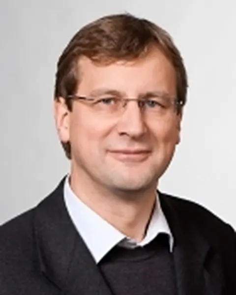
Technical University of Munich, Germany
IIT Bhilai
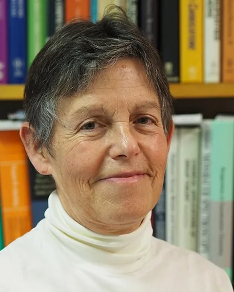
Université de Montpellier, CNRS, ENSCM, France
Heidelberg University, Germany
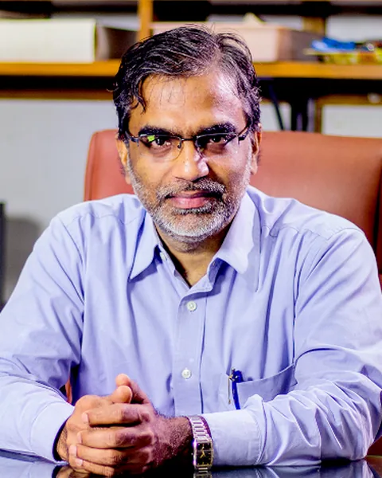
IIT Madras
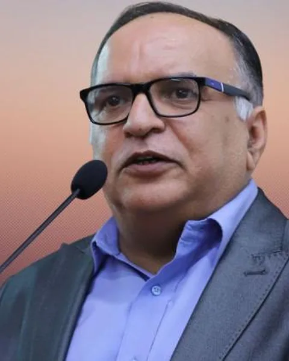
IIT Ropar
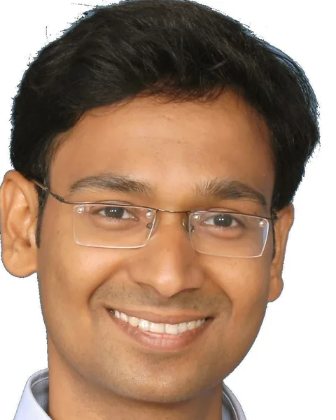
IIT Kharagpur
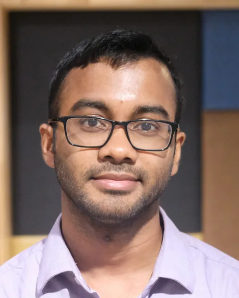
Hokkaido University, Japan
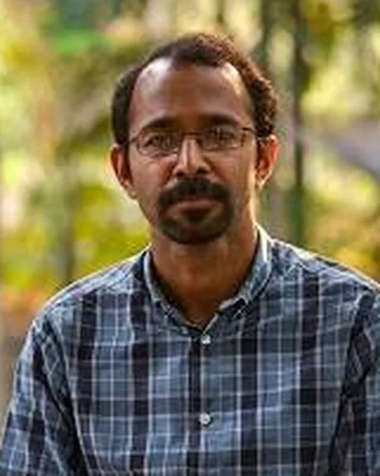
Indian Institute of Science, Bengaluru

Applied Materials
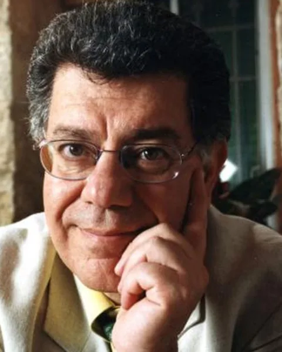
The Hebrew University of Jerusalem, Israel
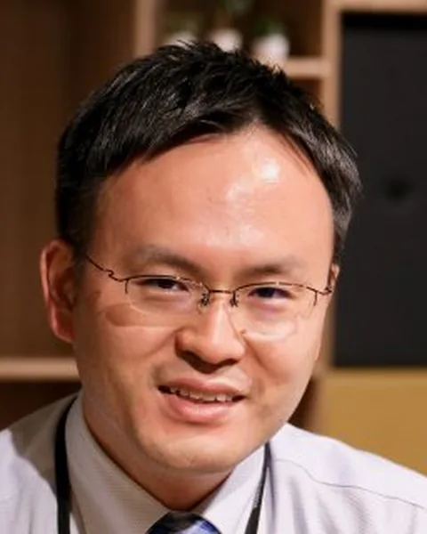
Hokkaido University, Japan
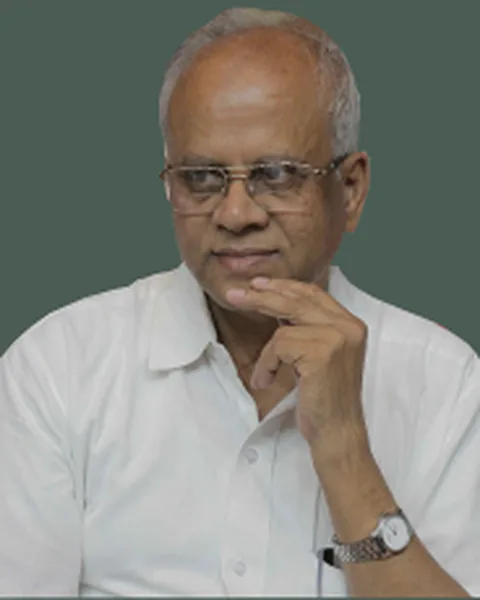
IISER Thiruvananthapuram
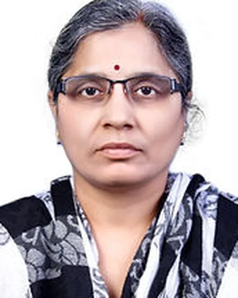
CSIR-IICT Hyderabad
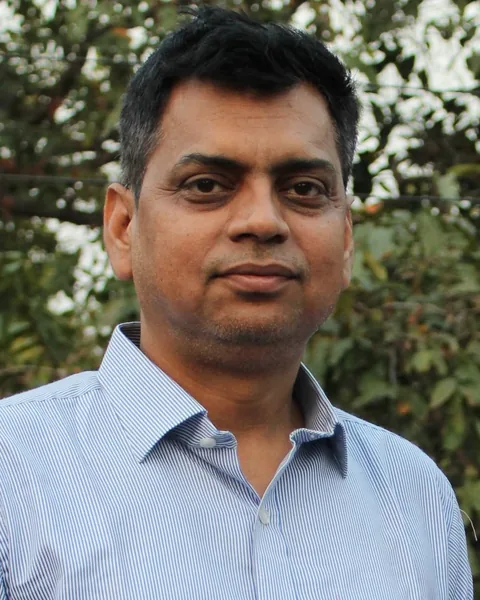
NIT Durgapur
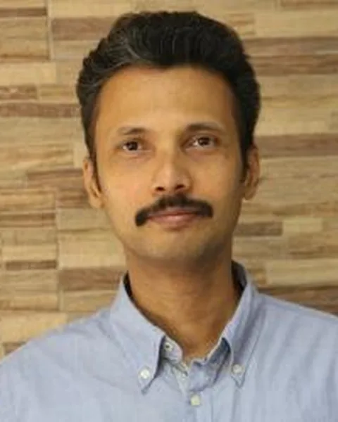
IIT Bombay
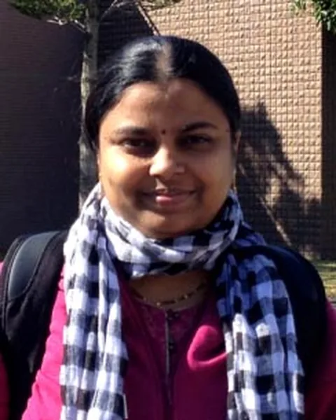
IISER Thiruvananthapuram